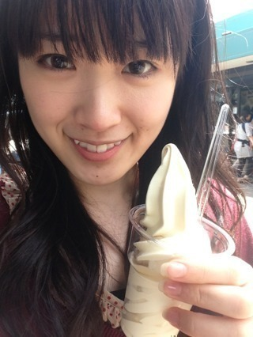
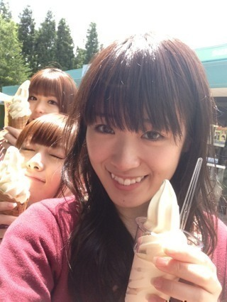
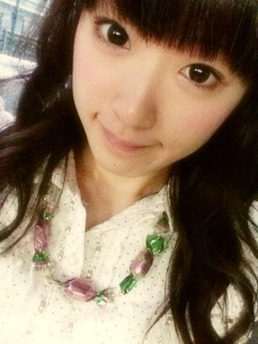
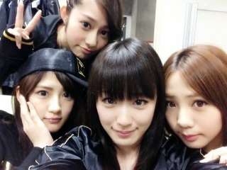

2013/0622Sat（´-`）.｡oO(か ずみん×182
いつも応援ありがとうございます♡.%
ラジオ聞いたよ〜とか
雑誌見たよ〜とか
テレビ見たよ〜とか
元気もらってます！とか
いつも応援コメントありがとー！！！
嬉しいよ〜(´;ω;`)♡
ちょっと遠くだったので
帰りにパーキングでソフトクリーム
食べました(っ`∀´*)
ウマイル♪♪

まっつんとまいやんも♪

私はソフトクリームの
ワッフルコーンが苦手なので
大体カップにしてもらってます(*ﾟρﾟ)
みんなはどっち派♡？
あとね、
先日奮発してジェーンマープルで
一目惚れした飴のネックレスを
買ってしまったの...(*´ｰ`*人)

本物みたいでしょ？？
お洋服は高くて到底買えない
ジェーンマープルだけど、
ネックレスなら...と
ちょっと自分にご褒美♡
つけてるだけで
気分があがっちゃいます( ∩ˇωˇ∩)♡
ファンシーな物好きヽ(´>∀<`*)ﾉ
顔に似合わないけど...苦笑

↑BEASTと時とは正反対っす。笑
たまにはこういうかっこいいのも
いいかなっ？！
よしっ
明日からも頑張ろう♪
来週はイベントとかTVもあるからね！
ガールズルールの歌とダンス
頑張らなきゃ！！
思いっきり歌って踊ったあとは
気持ちいいんです(*´ω`*)ﾉ
もっと頑張るぞっ'`ｨ(´∀｀∩
それでは、今日はこの辺で♪
おますみなさい...☆
2013/06/22 23:30


コメント(422)
感動をありがとう！
だいすきー！！！
私はいちおうコーン食べれますよ♪
ソフトクリーム、ワッフルコーン好きだからカップじゃないやつだな(^_^;)
まいやん、さゆりんと一緒に遠くで撮影かな？お疲れさま！
それじゃあ～
ブログ更新待ってました！
かずみん＼(^o^)／
めっちゃ大好きです♪
早くテレビで歌うの楽しみだよ♪
早く全握楽しみだよ( ´ ▽ ` )ﾉ
自分は幕張にいくね(((o(*ﾟ▽ﾟ*)o)))
じゃあこれからも
お仕事など頑張ってね！
最後に質問です！
来週東京に行くんですけど
良いリュックとか売ってるお店
教えてくださーい(((o(*ﾟ▽ﾟ*)o)))
じゃあおやすみなさーい！
ソフトクリームいいな
ワッフルコーンがいいよ！ カリカリ美味しい～
可愛いネックレスやん！ おいしそーw
明日もガンバロー！ ふぁいっと！
アイス分かるよ！
コーン嫌いじゃないけど
溶けとの勝負なるのが嫌だからカップ派www
ネックレス似合ってるよ(=ﾟωﾟ)ﾉ
たまには奮発してなw
日頃の頑張りのご褒美！
イベントは名古屋全国握手まで行けないけど
頑張ってね(((o(*ﾟ▽ﾟ*)o)))
なす
ロケお疲れ様♪
自分はワッフルコーン派だやぁ♪
おやすみ(-_-)zzz
ソフトクリームが美味しい季節だよね(^-^)
自分はコーンが欲しい派だよ(^-^)
雨のネックレスも可愛いね☆
そのネックレスの色が好き(^-^)
明日からもお互いに頑張ろうね(・ω・｀=)ゞ
同じくカップ派w
美味しそうっすなあ〜(^O^)
BADBOYSJ見てました！
よかったです(^^)/
映画も見ますね！
これからも頑張ってください！
おやすみなさい(^_^)ﾉ
ネックレスかわいい♪♪
似合ってるぜ!!!!!!!!!!
HK3揃ったねщ(ﾟДﾟщ)笑
何を企んでいるやらﾟ・｡・(ﾉ∀ﾟ)σ・｡・ﾟ
普通のコーンわちょっと
好きじゃないけど(｡-∀-｡)
ワッフルわ好きですね〜♪♪
先っちょまでアイスが
詰まってないと
ちょっと悲しくなるけど...笑
海の家のぎざか後で聞くから
まっとってーヽ(´□｀。)ﾉ･ﾟ
でわ!! 今日も頑張ってな♪♪
いつも応援しとるよ〜(σﾟ∀ﾟ)σ
こんばんは♪
ワッフルコーン苦手なんですか！？
自分は大好きです(笑)
BAD BOYS Jもちろんみましたよ！
少しだけ映ってましたね(笑)
いやーかずみんは可愛すぎ！(照)
明日も頑張ってください(^-^)/
では、お休みなさい(-.-)Zzz・・・・
かずみん こんばんは (#^.^#)
いつも かずみん の活躍見ながら元気もらってるよー ( ´ ▽ ` )ﾉ
かずみん のブログ見てるだけでもポジティブになれる！
ソフトクリーム美味しそう (///∇//)
自分もカップにできるときはコーンよりカップ派！
パフェなんか食べてても
底の方のシリアルもクリームに変えてくれないかなぁ (´･_･`)
とか思っちゃう！笑
ネックレスおしゃれやね ♪
包み紙の感じとか本物っぽい *\(^o^)/*
ファンシーな かずみん も自分は好きだよ (^o^)/
明日からもがんばってね ＼(^o^)／
やっぱりワッフルコーンですよ。かずみんさん。
よんでますよ。アザゼルさん。みたいになっちゃった*\(^o^)/*
知らなかったらりんご姫に聞いてね。
アイスおいしそう(^ｑ^)♡
飴のネックレス
くそかわいいい///
あたしもほしいっ(*´꒳`*)♡
あーBATBOYSjついに終わっちゃいましたね～( ´△｀)
こんなに最終回が終わって寂しい思いをしたのはBATBOYSjが初めてです
かずみんもちょっと出ましたね(￣∇￣*)ゞ
いやー、毎週の楽しみの１つでもあったので本当に寂しいです( ´△｀)
絶対映画みよ！！！！
それでは おますみなさい！！(笑)
最後のやつ活用させていただきました(笑)
俺はワッフルコーンのが好きだよ。
飴のネックレスはやっぱり飴と鞭の飴担当だからでしょ。
てか、ほんとに本物みたいでおもしろいねそれ。
いい買い物だと思う。
来週もイベントとかテレビとか色々がんばってね。
応援してますよー
今回は選抜メンバー？？
もしかして新番組のロケとか！？
俺SAとかPA行くとかなりの確立でソフトクリーム食べるわw
なんか食べたくなってしまう！！
俺はワッフルコーン好きだよ…(´･_･`)
ジェーンマープル…
わからない！
女の子のブランド？有名なの？
飴ってとこがファンシー系でかずみちゃんっぽいね！！
ビーストのやつ前髪パッツンにするとだいぶ印象違うな！！
前は分けてたから！
名古屋の全握までもうちょっとだけど長かった！！
でもまだ2週間ぐらいはあるのか…(´Д｀)
てなにごと＼(^o^)／笑
ほんとかわいい～◎
イベントたくさん決まって
ますね(｀・ω・´)＊
忙しいので体調崩さない
ようにねっ(=゜ω゜)ノ
アイスはもちろんワッフルコーン(￣∇￣)
あれが苦手だなんて勿体ない(*_*)
飴のネックレス可愛いねー(｡･ω･｡)
そーゆう小物好きだよ＼(^o^)／
来週の月曜日の奴バイトで行けんわ…
中学生も高校生もテスト期間だからねえ(>_<)
おれはバイト頑張るからかずみんは全力でアイドルしてきてね＼(^o^)／
録画したBBJ見て、サッカー見たら寝ます(o・・o)
のぎーぃ！
ゆーたんなう
ソフトはコーンがなきゃ派だわ！
濃厚ミルクがうまたんだよね♪
飴ちゃん溶けそうなくらいリアルで(*´艸｀)ｷｬ
お似合いです:*:・''゜ (〃ゝ∇・)ゞえヘッ♪
ずーさんならなんでも似合うからさ！
来月はHKTとの対決とかめざましライブとか気になること盛りだくさんだね♪
兎に角会いたい！！
今日も１日お疲れちゃん
ぢゃあ
(一実о´∀`о46)
↑
これ大事
アイスはコーンも好きだからコーン派！
明日も頑張ってね♪
ソフトクリームか！！
夏らしい！！！笑
ちなみに僕はその時の気分だけどコーンかなー。カップはあんまりないかも。笑
ネックレスめっちゃかわいいね(o^^o)
そろそろ眠いので寝ます！
おやすみなさい(*^o^*)
こんばんは♪
お休みなさい(-.-)Zzz・・・・
とコメントしておきながら早速コメント２回目です(笑)
ファンシーな感じも似合ってますよ！
かずみんは、BEASTの時みたいにカッコいいキリッてした感じも、素敵です(照)
では、ホントにお休みなさい(-.-)Zzz・・・・
今日もお疲れさまです！
パーキングは昔バイトやってたんですよね？
なんか覚えてたーーー！
凄いでしょ？笑記憶力勉強以外は無駄に凄いんす！ドーン
小さい頃はカップ派だったなー
最近はなんかコーンの部分も食べれるっていう考えが出て来てるから、コーンの方が多いかなー？
んーどっちも派です！d(￣ ￣)
なんか今日のブログご機嫌ですね！
そこがかずみんらしくてこっちは元気になれるんだけどね！(*^^*)
イベ握手会以外参加出来るかわかんないけど、これからのイベ楽しみにしてますね！
明日からもお仕事ファイトっす！！
かずみんってなーちゃんの好きなジョジョ好きですか？最近友達の影響でハマり始めてるんだけど、良かったらなーちゃんに話聞いて見てね！
空条承太郎が今んとこ推しメンです！笑
ロケお疲れさま
ソフトクリームいいな〜
おいしそう
かずみんワッフルコーン苦手なんだ
俺もあんまり好きじゃないんだよね
だから基本カップだよ
自分にご褒美は大事だよ
ネックレスいいね
BEASTのかずみんはかっこいいからね
明日からも頑張ろう
24日はイベントもあるしね
ではでは
おますみなさい...☆
はしもー
眠い！！テスト勉強してま～す
昨日早く寝たけん今やらんと
ソフトクリームいいな～
自分はワッフルコーン派かな(^o^)
最後らへんコーンだけ食べんといけんのが嫌やけどそれでも好き
もうそろそろ新曲で乃木坂の露出も増えてくるけん観んとね！！
かずみんも頑張って!(^^)!
応援してるよ～
それじゃあ、あと少し勉強するね～
おやすみ(^_^)ゞ
ネックレス似合ってるよ(^^)v
カップにしてくれるんだ
知らなかった
今度頼んでみよう
かずみん大活躍で嬉しい
いつも楽しませてくれて
元気をくれてありがとう
大好き
ワッフルコーン派です！サクサクして美味しい！
ネックレス似合ってる！
かずみんはピンクが似合いますね＼(^o^)／
かずみんの顔、めっちゃタイプです(///∇///)
BBJハマッてました！
お疲れ様でした^^
イベリコ牛
ソフトクリーム、美味そう・・・。
パーキングエリアとかの食事って
何故か美味しく感じたりするよね^^
俺はコーン、カップどっち派だろう・・・？
気にしたことないやｗ
ついさっき、バッドボーイズ最終回見たよ！
最後は乃木坂メンバーも全員出演してたね。
まさか、あのメンバーまで出るとは・・・ｗ
次は映画だね～。
ネックレス、いいね！似合ってる！
たまには自分へのご褒美って言う名目で
高額な買い物するのもアリだね。
俺なら自分へのご褒美に・・・握手会の券かな？ｗ
かずみんばんわ(*^o^*)
一枚目の写メは髪の毛かな？
鼻のところ線みたいになってるよ
ソフトクリーム食べたいな〜
でも食べるのめんどくさいんだよね
だからコーンよりカップの方が良いかも
でわでわこの辺で@(・●・)@
こんばんは=^・^=
ソフトクリーム(*^^*)
美味しそう(o^o^o)
私はコーン派っていうか、カップで食べたことないなぁー……たぶんf(^_^;
ソフトクリーム持ったかずみんいい顔してる(*^^*)
飴のネックレス本物みたいで可愛い♪
かずみんに似合ってると思うけどな(*^^*)
歌やダンス頑張って(p^-^)p
歌ってるかずみん大好きだよ(*^^*)
かずみさん♪
おますみなさい♪
またね(*・ｘ・)ノ~~~♪
俺はワッフルコーンも大丈夫だよん＼(^-^)／
ネックレスなんか宝物みたいに見えるね(^o^)
更新ありがとうo(^-^)o
最近更新多くて嬉しいな♪ありがとう(≧∇≦)
ラジオね…聞きたいんだけどさ、北海道やってないのばっかりで聞けないの。゜・（>A<）・゜。
うっすら聞けても韓国語入るし…
だからあんまり聞けないの。ごめんね…
----------
ソフトクリーム美味しそう(゜ρ゜)
うちはワッフルコーン好きだからワッフルコーン派!!
残してる人が居たらくれ!!って感じ(笑)
コーンだけ欲しいな…
………………
自分へのご褒美いいじゃない(￣ー￣)
お洋服でもいいんじゃないかな？
かずみん頑張ってるんだからさ！
ファンシーなものうちも好き！
でも似合わないし、がらじゃないし…
見るだけなんだ(泣)
悲しい…
**********
ガールズルールの振り付けうちも楽しくなるよ♪
うちは残酷な天使のテーゼを歌ったとき
気持ちが軽くなるよ(笑)
来週も忙しいのね！
でも頑張って＼(^o^)／
かずみんが出るだけうち笑顔になるんだ♪
元気にもなるし！
だから、頑張って！
では眠いからおやすみなさいヾ(・◇・)ノ
またねヾ(´ー｀)ノ
ほんとに更新多くて嬉しい(≧∇≦)
サービスエリアで食べるソフトクリームは普通よりなぜかおいしく感じるよね
ワッフルコーン嫌いなのかー
自分はクリームだけ先にたべてワッフルコーン全部残して最後に一気に食べるくらいすきです(笑)
ではお仕事頑張ってください
いやぁ嬉しいねぇ(σ*´∀｀)
ブログ読むのが楽しみの
１つでもあるからね(σ*´∀｀)
ワッフルコーン派♪
カップはなんか…損した気分になるww
ガールズルール！８福神になったぜ!!いぇーい!!
って気持ちを全面に出してね＼(^o^)／！
名古屋全握で見れるの楽しみふぉぉぉー！
かずみんなんか顔変わった？
こんな時間にBlog更新があるとは・・・
ちょっとびっくりと、嬉しさが入り混じってる…→◎です。
BBJ最終回でしたね。
もちろん観ましたよ。
まあ正直、かずみんの見せ場あり！って感じのドラマ
じゃなかったけど、キリっと高山、乃木坂さんが観れた
から良かったです。
お疲れ様です。
今日は遠方へのロケだとか。
本当に毎日忙しそうですね。
ソフトクリームの写真（2枚）めっちゃ可愛い♪
それにコメントの「ウマイル♪♪」って、以前の乃木どこの
時と同じじゃん（笑）
まあ、狙った感も良いよ～。
ジェーンマープルのネックレス？
価値観が全く分からん・・・
まあ、かずみんらしいラブリーなネックレスだね。
可愛いよ♪
（↑ぎゃぁ～、なんかこの言葉、照れる自分・・・(o^_^o)）
あっ今ね、CDTV観てたら「ガールズルール」の告知が流れた。
発売されたら、GuestLiveにでないかなぁ～。
では。
苦手だわあれー
みやぽっぷです。
ソフトクリームいいですねー。最近コンビニでアイスばっかり買ってる自分ですが、ソフトクリームも食べたいっ！コンビニで売ればいいのになー(´･_･`)
そういえば、かずみさんはソフトクリーム店でバイトしてたとか！結局巻けなかったんでしたっけ？（笑）
そしてソフトクリームをカップで食べる人を初めてみました（笑）
ネックレス！かわいい（＾ω＾）
前もお菓子柄のワンピ着てたし、こういうの好きなんですね！
そしてこのレディース組の写真は！かずみさんの髪型的に、映画版の撮影中とみた！( *｀ω´)
今日はドラマ版の最終回ですねー。でも関西は映らない(´･_･`)なので配信を待ちます！
それではっ( ´ ▽ ` )ﾉ
たてやまの渚の駅くるのU^q^U
本当に高山さんはメンバー想いで頼りがいのある存在だと感動しました。
感動して自分ももっと頑張らなって感じました。
ありがとうございます。
応援してます。
ワッフルコーンもなんで苦手なんですか?!?
僕も今日アイス食べたよー。
アイスって愛知県の人は好きなんだよ。
ラーメンとアイスをいっしょに食べるんだよ。
らりんに聞いてみて。
かずみさんたくさん雑誌とか出てるのうれしいよ。
早く、実物に会いたいです。笑
毎日毎日忙しそうだね(笑)
頑張ってね、かずみん！
俺も今日は授業に部活に頑張ってるよ……キツい！(笑)
ソフトクリームは俺はコーン系だよ(笑)
コーンがおいしいでしょ！(笑)
てかこのネックレス本物の飴じゃないの!?
マジで本物に見えるわー(笑)
いいな～欲しいな～(￣∇￣)笑
明日のアカン警察見るねー(笑)
じゃあね～(^^)/
ロケお疲れ様でした♪
ラジオ聞いたよ。雑誌、テレビもチェックしているよ。
一応、報告です（笑）
ソフトクリームはワッフルコーン派。
場合によってはカップです。
ジェーンマープルのネックレス似合っているよ(*^^*)
今度の個別で見れるかなぁ。
それでは、おやすみなさい☆彡
コメントする